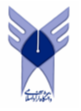

برنامهسازی پیشرفته
(جاوا)
مدرس: سید سجاد پیراهش
دانشگاه آزاد اسلامی واحد تبریز
اسلایدها، ویدیوها و اینفوگرافیکهای درس

پیشرفت کلی
۰ از ۲۰ بخش (۰٪)
✅ ۰ Checkpoint تکمیل شده از ۵
🔒
دسترسی ترتیبی (قفل مرحلهای)
🔄 شروع مجدد دوره